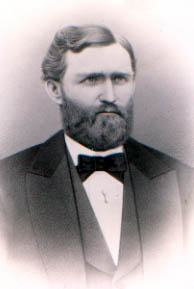

Historical Images
A visual journey through the history of Iliff, Colorado and the people who shaped it.

John Wesley Iliff (1831-1878)
Known as the "Cattle King of Colorado," John Wesley Iliff owned approximately 35,000 head of cattle and 15,558 acres. The town of Iliff was named in his honor, reflecting his significant impact on the region's early cattle industry.

Welcome to Iliff
The modern town sign welcoming visitors to Iliff, Colorado. Despite significant population decline since its peak in the early 1900s, the town remains a testament to the agricultural history of northeastern Colorado.